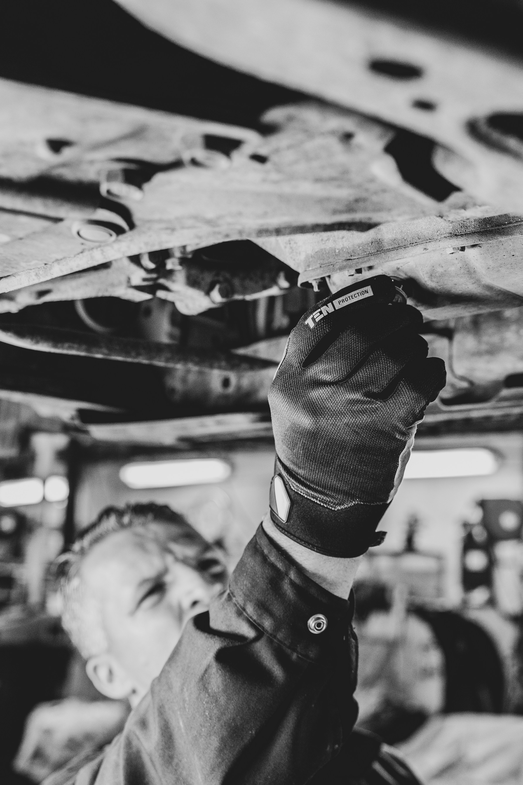

Sobre Nós
A Santorini nasceu no coração de Leiria com uma visão clara: transformar a experiência dos serviços automóveis em algo mais simples, transparente e confiável para todos. Desde o início, acreditámos que reparar um automóvel é apenas parte do nosso trabalho. O verdadeiro compromisso está em oferecer tranquilidade, segurança e confiança a cada cliente que deposita em nós o seu veículo. Com mais de 15 anos de experiência no setor automóvel, a Santorini construiu uma reputação sólida baseada em profissionalismo, rigor técnico e dedicação absoluta à qualidade. Ao longo deste percurso, tornámo-nos uma referência na área de bate-chapa e pintura, reconhecidos pela excelência dos nossos acabamentos e pela atenção a cada detalhe. A nossa empresa foi estrategicamente estruturada para oferecer um serviço completo, eficiente e acessível, capaz de responder tanto às exigências de clientes particulares como às necessidades de frotas empresariais. Investimos continuamente em conhecimento, processos e qualidade de serviço, porque acreditamos que cada automóvel merece o mais alto padrão de cuidado. Mas aquilo que verdadeiramente define a Santorini vai além da técnica e da experiência. É a relação de confiança que construímos com cada cliente. Aqui, cada pessoa é recebida com respeito, proximidade e compromisso. Cada veículo é tratado com o cuidado que merece. Porque sabemos que, por trás de cada carro, existe uma história, uma rotina e uma vida que precisa continuar. Na Santorini, mais do que reparar automóveis, construímos confiança todos os dias.
Porque aqui não cuidamos apenas de carros,
cuidamos de pessoas.